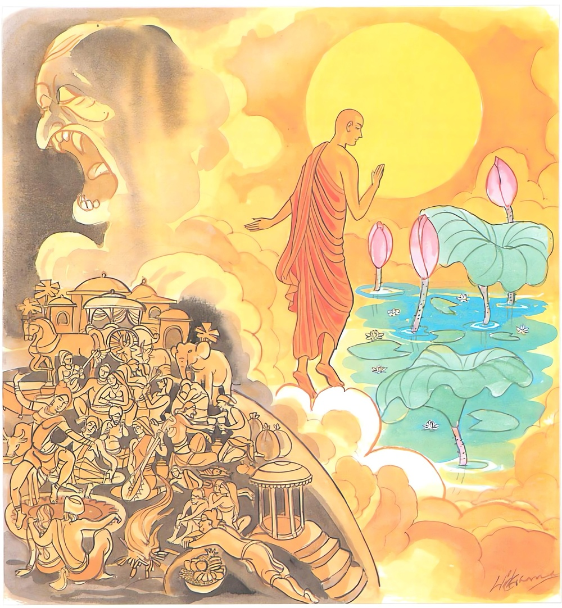

26-30 චන්ද්රාභ තෙරුන්ගේ පුවත
මෙම කතාව සද්ධර්ම සාගරයෙන් ද කියවන්න.
චන්දං’ව විමලං සුද්ධං විප්පසන්නමනාවිලං.
නන්දීභවපරික්ඛීණං තමහං බ්රූමි බ්රාහ්මණං.
පූර්ණ චන්ද්රයා මෙන් නිර්මල වූ, පිරිසිදු වූ, වෙසෙසින් පහන් වූ, නිරාකුලවූ, භවත්රයය පිළිබඳ තෘෂ්ණාව ක්ෂය කළා වූ ඒ ක්ෂීණාස්රවයා බ්රාහ්මණ යැ යී මම් කියමි.

"චන්දංවාති" යන මේ ධර්ම දේශනය ශාස්තෲන් වහන්සේ දෙව්රම වැඩ සිටිය දී චන්දාභ තෙරුන් පිළිබඳව මෙම දේශනය කළහ.
එහි අනුපිළිවෙල කථාව මෙසේය. පෙර බරණැසවාසී එක් වෙළෙන්දෙක් ප්රාන්ත දේශයකට ගොස් ගම්දොර නිවසක් හදාගෙන කැලෑවේ ගොපලු දරුවන්ගෙන් විමසීය. මේ ගමේ පබ්බතපාද කාර්මික මිනිසෙක් සිටීද? ... ඔහුගේ නම කුමක්ද අසවල් නමයි භාර්යාවගේ හා ඇගේ දරුවන්ගේ නම් මොනවාද? මේ මේ යයි කීවාහුය. ඔහුගේ නිවස තිබෙන්නේ කොහේද? අසවල් තැනයි. හෙතෙම දරුවන් විසින් දෙන ලද සලකුණු අනුව යහපත් රථයක වාඩිවී ඔහුගේ නිවසට ගොස් රථයෙන් බැස ගෙට පිවිස නම කියා ස්ත්රීය කැඳවීය. ඇය අපේ එක් ඥාතීයෙකු වන්නේ යයි වේගයෙන් අවුත් අසුනක් පැනවීය. ඔහු එහි වාඩි වී නම කියා මගේ මිතුරා කොහේදැයි විමසුවේය. ස්වාමියා ඔහු වනයට ගියේය. මගේ අසවල් පුතා අසවල් දුව කොයිද සියල්ලන්ගේ නම් කියන විට විමසා මේ ඔවුන්ගේ ඇදුම් හා පැළදුම්ද දුන්නේය. මගේ මිතුරා වනයෙන් පැමිණි විට මේ වස්ත්ර ආභරණ දෙන්නැයි පැවරුවේය. ඇය ඔහුට උදාර ලෙස සත්කාර ස්වාමියා පැමිණිවිට මොහු පැමිණි බව හා සියල්ලන්ගේ නම් කියා මේ මේ දේ දෙන ලදයි පැවසුවාය. ඔහු ද කළ යුතු දැ කළේය. අනතුරුව ඔහු සවස් භාගයේ ඇදෙහි සිටියදීම විමසුවේය. යහළුව පර්වත පාදයේ හැසිරෙන විට ඔබ බොහෝසෙයින් කුමක් දැක්කේද? අනෙකක් නොදුටුවෙමි රතු සඳුන් ගස් ඇති බොහෝ ගස් දුටුවෙමි. එසේය ඔහු එසේය එසේ නම් මටත් පෙන්වන්න. ඔහු සමග ගොස් රත් සඳුන් ගස් සිඳ ගැල් පන්සියයක් පුරවා එන අතර කීවේය. යහළුව බරණැස අසවල් තැන මගේ නිවසයි. කලින් කල මගේ නිවසට එන්න. අනෙක් පඩුරු අවශ්ය නැත. රත් සඳුන්ම අරගෙන එන්න ඔහු යහපතැයි කියා කලින් කල ඔහු ළඟට යන්නේ රත් සඳුන්ම රැගෙන යයි. ඔහු ද බොහෝ ධනය දෙයි.
ඉන් පසුකලෙක කාශ්යප බුදුන් වහන්සේ පිරිණිවන් පෑවිට පිහිටවූ රන් ථුපය කළ කල්හි ද එම පුරුෂයා බොහෝ රත් සඳුන් ගෙන බරණැසට ගියේය. අනතුරුව ඒ මිතුරා බොහෝ සඳුන් ගල ගා කුඩු කර පාත්රය පුරවා එන්න යහළුව බත් පිසයිද ඒතාක් චෛත්යය කරන ස්ථානයට ගොස් එන්නෙමුයි, ඔහු ද රැගෙන එහි ගොස් චන්දන පුජා කළේය. ඒ ප්රත්යන්තවාසී මිතුරා චෛත්ය ගැබ සඳුන්වලින් සඳ මඩල (ආකෘතිය කළේය) ඔහුගේ පුර්ව කර්මය මෙයයි. ඔහු ඉන් චුත වූයේ දෙලොව ඉපිද එක් බුද්ධාන්තරයක් එහි ගතකොට මේ බුද්ධෝත්පාදයේදී රජගහ නුවර බ්රාහ්මණ මහාසාල කුලයේ උපන් ඔහුගේ පෙකනියේ සඳමඩල සමාන ප්රභාවක් ඇතිවුනි. මේ නිසා ඔහුව චන්ද්රභා යන නම ලැබුනි. චෛත්යයේ චලමණ්ඩල කිරිමේ පිනෙන් මේ බමුණා සිතුවේය. අප විසින් මෙය ගෙන ලෝකයා රැවටීමට හැකිය. ඔහු යහනේ වාඩි කරවා යමෙක් මේ ශරීරයට අතින් ස්පර්ශ කරයිද ඔහු මෙතරම් ඉසුරු සම්පත් ලබන්නේයයි කියා හැසිරුනි. සියයක් හෝ දහසක් දී ඔහුගේ අතින් ස්පර්ශ කිරිමට ලබති. ඔවුන් මේ ලෙසට හැසිරෙමින් පිළිවෙලින් සැවැත් නුවරට පිවිසියහ. නගරයට ද විහාරයට ද අතර පදිංචියට පැමිණියහ. සැවැත් නුවර කෝටි පහක් ජනතාව ආර්ය ශ්රාවකයන්ට පෙරබත් කළ දන්දෙති. සවස සුවඳ මල් වස්ත්ර බෙහෙත් ආදිය ගත් අත් ඇතිව ධර්ම ශ්රවණය සඳහා යති. බ්රාහ්මණයා ඒ දැක කොහි යන්නේදැයි විමසුහ. බණ ඇසීම සඳහා බුදුන් වෙතට යයි පැවසුහ. එන්න එහි ගොස් කුමක් කරන්නද? අපේ වන්ද්රභා බ්රාහ්මණයාගේ ආනුභාව මෙන් ආනුභාවයක් එහි නැත. මොහුගේ ශරීරය ස්පර්ශ කිරීමෙන් මේ මේ දේ ලබත් එන්න බලන්න තොපගේ බ්රාහ්මණයාගේ කවර ආනුභාවයක්ද අපේ තථාගතයන් වහන්සේ ම මහත් ආනුභාව සහිතය. ඔවුන් එකිනෙකා දැන ගැනීමට නොහැකිව විහාරයට ගොස් චන්ද්රභා බ්රාහ්මණයාගේ ද බුදුරජාණන් වහන්සේගේ ද ආනුභාව දැනගනිමුයි ඔවුන් ගෙන විහාරයට ගියාහුය. බුදුරජාණන් වහන්සේ වෙත ඔහු සමීපවත් වෙත්ම චන්ද්රභාගේ ආනුභාවය, අන්තර්ධාන විය. දුරුවිය. ඔහු එහිදී බුදුන් ඉදිරියේ අඟුරු කූඩයක කපුටෙක් මෙන් විය. අනතුරුව එකක් පසකට ගෙන ගියහ. ප්රභාව ප්රකෘතිමත් විය. නැවත බුදුන් වෙත ගෙන ගියහ. ප්රභාව එලෙසම අතුරුදන්විය. මේ ලෙසට තුන්වතාවක් ගොස් අතුරුදන්වන ආලෝකය දැක වන්ද්රභා සිතුවේය. මේ බුදුහු ප්රභාව නැතිකිරිමේ මන්ත්රයක් දනී යයි සිතමි. ඔහු බුදුන්ගෙන් විමසුවේය. මගේ ප්රභාව නැතිකරන මන්ත්රයක් දන්නේද? ඔව් දනිමි. එසේ නම් එය මට දෙන්න. පැවිදි නොවුවෙකුට දෙන්නට නොහැකිය.
ඒ බ්රාහ්මණයා කීවේය. මේ මන්ත්රය ගත් පසු මම මුළු දඹදිව ජ්යෙෂ්ඨයා වන්නෙමි තෙපි මෙහිම සිටිමු. මම පැවිදිවී දින කීපයකින් මන්ත්රය ගන්නෙමි. ඔහු බුදුන්ගෙන් පැවිද්ද ඉල්ලා ගෙන උපසම්පදාවද ලැබුවේය. පසුව ද්වත්තිංසා පැවසුවේය. ඔහු මේ කුමක්දැයි විමසුවේය. මෙය මන්ත්රයට පරිකර්මයයි. වඩන්නට වටී. බ්රාහ්මණයෝ වරින් වර පැමිණ මන්ත්රය ගත්තේදැයි විමසති. තවම නොහැකිවිය. ඔහු දින කීපයකින් ම අරහත්වයට පත්විය. බ්රාහ්මණයින් පැමිණ විමසුවිට තෙපි යමු දැන් මම නොපැමිණෙන ධර්මයට පැමිණුනේ වෙමි. භික්ෂුහු බුදුන්ට දැනුම් දුන්හ. ස්වාමීනි මොහු අභූතයක් කියා අනෙකක් විස්තර කරයි. මහණෙනි. දැන් මගේ පුතුගේ නදිය ශීරාවිය. කිය යුතු දෙයක්ම වු දෙයක්ම දැන් කියයි. පවසා මේ ගාථාව පැවසුහ.
නිමල සුදු සඳ සේ
නො කැළඹුණු ගති මනසේ
ඇති බමුණු සුවසේ සිටියි
තන්හා දුරැර සිතුසේ
සඳමෙන් විමල වූ පිරිසිදු වූ වෙසෙසින් පහන් වූ නොකැළඹුණ භවයේ සතුටුවන තෘෂ්ණාව ක්ෂය කළ භව ආශාව ගෙවා ලූ තැනැත්තා බ්රාහ්මණ යයි කියමි.
එහි විමලං යනු සඳ සේ නිර්මල බව. සුද්ධං - උපක්ලේශ නැතිබව විප්පසන්නං - ප්රසන්න වූ සිත, අනාවිලං - නො කැළඹුණු බව, (කෙලෙස් නමැති මඩ හා බොර නැති බැවින්) නන්දීභව පරික්ඛිණ - භවය පිළිබඳ ආශාව සහමුලින් සිඳ දැමීම, තමහං බ්රාහ්මණං - ඒ තැනැත්තා බ්රාහ්මණ යයි කියමි.
දේශනාව අවසානයේ බොහෝදෙනා සෝවාන් ආදී මාර්ග ඵලවලට පැමිණියාහුය.